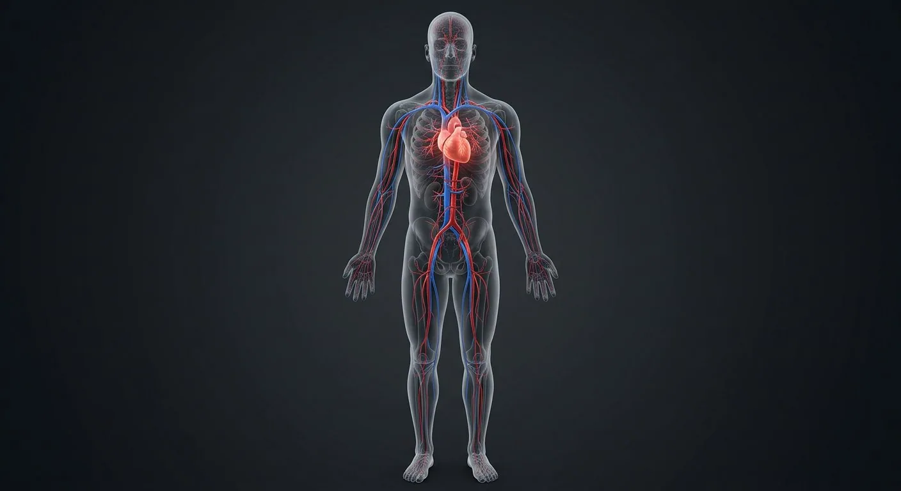

Common carotid arterySubclavian arteryBrachial arteryRenal arteryCommon iliac arteryFemoral arteryGreat saphenous veinInternal jugular veinSubclavian veinVasa vasorumAortic archEndotheliumTunica mediaSuperior vena cavaTunica adventitiaHeartDescending aortaInferior vena cavaCoeliac trunkCapillary pericytes- 01Aortic arch
- 02Common carotid artery
- 03Subclavian artery
- 04Brachial artery
- 05Descending aorta
- 06Coeliac trunk
- 07Renal artery
- 08Common iliac artery
- 09Femoral artery
- 10Internal jugular vein
- 11Subclavian vein
- 12Superior vena cava
- 13Inferior vena cava
- 14Great saphenous vein
- 15Heart
- 16Endothelium
- 17Tunica media
- 18Tunica adventitia
- 19Vasa vasorum
- 20Capillary pericytes
How this part of the body works
The arterial and venous maps a surgeon names daily, from carotids to saphenous.
Read the anatomy, part by part
These 20 structures describe anatomy related to the chapter’s regional illustration. Each entry separates location, function and a clinical point.
Aortic arch
Curve giving brachiocephalic, left carotid, left subclavian.
What it doesDistributes to head and arms.
Clinical connectionCoarctation: hypertension above, weak femorals below.
Common carotid artery
Neck artery bifurcating at C4.
What it doesBrain and face supply.
Clinical connectionCarotid bruit = stroke risk; press on the sinus to slow the heart.
Subclavian artery
Under clavicle to axillary artery.
What it doesArm supply; gives vertebral to brain.
Clinical connectionSubclavian steal reverses vertebral flow on exertion.
Brachial artery
Upper-arm continuation.
What it doesArm and forearm supply; BP cuff site.
Clinical connectionIntra-arterial cannulation risk at elbow.
Descending aorta
Thoracic then abdominal aorta.
What it doesSegmental branches to wall and viscera.
Clinical connectionAneurysm screening in male smokers over 65.
Coeliac trunk
T12 branch: left gastric, splenic, hepatic.
What it doesForegut supply.
Clinical connectionCoeliac compression syndrome causes post-meal pain.
Renal artery
Paired L1 branches, high flow.
What it doesKidney perfusion for filtration.
Clinical connectionRenal artery stenosis = curable hypertension.
Common iliac artery
Aortic bifurcation at L4.
What it doesPelvis and limb supply.
Clinical connectionBifurcation level = umbilicus landmark.
Femoral artery
External iliac under inguinal ligament.
What it doesThigh and leg supply; catheter access.
Clinical connectionPulse check in trauma; medial is vein, lateral is nerve.
Internal jugular vein
Brain's main venous exit.
What it doesCerebral drainage; JVP window to right heart.
Clinical connectionJVP height estimates central venous pressure.
Subclavian vein
Arm return; joins IJV at venous angle.
What it doesArm and chest drainage.
Clinical connectionPreferred site for central lines — risk of pneumothorax.
Superior vena cava
Short trunk from brachiocephalic veins.
What it doesUpper-body return to right atrium.
Clinical connectionSVC obstruction: facial swelling and distended neck veins.
Inferior vena cava
Largest vein, L5 to right atrium.
What it doesLower-body and hepatic return.
Clinical connectionIVC filters catch clots before the lungs.
Great saphenous vein
Longest vein: ankle to groin.
What it doesSuperficial leg return.
Clinical connectionHarvested for coronary bypass grafts.
Heart
Four chambers at the centre of both trees.
What it doesThe pump itself.
Clinical connectionOpen the heart page for the full chamber view.
Endothelium
Single-cell lining of blood-vessel lumen on basement membrane.
What it doesControls barrier, clotting and vascular tone signals.
Clinical connectionEndothelial damage promotes thrombosis.
Tunica media
Middle arterial or venous wall layer rich in smooth muscle, varying by vessel.
What it doesChanges vessel caliber and blood distribution.
Clinical connectionMedial degeneration can weaken large arteries.
Tunica adventitia
Outer connective-tissue layer containing nerves and, in large vessels, vasa vasorum.
What it doesAnchors and nourishes the vessel wall.
Clinical connectionMay be involved in vascular inflammation.
Vasa vasorum
Small vessels supplying outer wall of large arteries and veins.
What it doesNourish tissue beyond diffusion range from lumen.
Clinical connectionAortic wall disease can involve this network.
Capillary pericytes
Mural cells wrapped around some microvessels and capillaries.
What it doesHelp stabilize small vessels and regulate repair.
Clinical connectionMicrovascular damage affects tissue perfusion.
Five questions about Vascular system
Short answers grounded in the structures described above. Use the illustrated guide for anatomical context.
What is the difference between arteries and veins?
Arteries carry blood away from the heart and veins return it. The distinction is direction of flow, not oxygen level: pulmonary arteries carry less-oxygenated blood.
What is the aorta's role in circulation?
The aorta receives blood from the left ventricle and supplies the systemic arterial tree through branches serving the head, trunk and limbs.
What is the aortic arch?
Curve giving brachiocephalic, left carotid, left subclavian. Function: Distributes to head and arms.
Where is the subclavian artery located?
Under clavicle to axillary artery. Function: Arm supply; gives vertebral to brain.
What is the function of the descending aorta?
Function: Segmental branches to wall and viscera. Thoracic then abdominal aorta.
Related anatomy guides
Follow these connected structures and body systems in the illustrated atlas.
 HeartA four-chambered muscular pump with four valves and its own electrical conduction system.↗
HeartA four-chambered muscular pump with four valves and its own electrical conduction system.↗ Lymphatic systemThe body's drainage and defence network: interstitial fluid returns as lymph, filtered node by node, while immune cells patrol.↗
Lymphatic systemThe body's drainage and defence network: interstitial fluid returns as lymph, filtered node by node, while immune cells patrol.↗ Male body — anteriorA glass-body view of the male: every major organ in place, from brain to testes, with the reproductive tract in the pelvis.↗
Male body — anteriorA glass-body view of the male: every major organ in place, from brain to testes, with the reproductive tract in the pelvis.↗Further reading
General anatomy references and related source chapters for continued study. These links do not make the digital illustrations clinical images or certify every anatomical variant.
This educational page is not medical advice and has not undergone formal clinical peer review. Spotted an error? Contact the editor.
Open the realistic interactive plate, label lines, focus view and self-test.